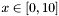

Esta sección tiene el propósito de mostrar al usuario las etapas mínimas necesarias para elaborar un proyecto de optimización en UNGenético 2.0, para este fin se ha planteado una función matemática que servirá de modelo para la creación del proyecto.
Se requiere encontrar el valor mínimo de la función:
Donde,
.
Como se observa en la siguiente gráfica, esta función presenta varios mínimos locales en el intervalo indicado. Sin embargo el mínimo global de f(x) se encuentra en el punto (4.342334, -1.928208).
Las optimizaciones implementadas en
UNGenético 2.0 se ejecutan dentro de un proyecto propio de un compilador de lenguaje C++ de libre escogencia. Para incluir
UNGenético 2.0, en la carpeta del proyecto deben copiarse todos los
archivos de la librería, tanto los encabezados como los fuente (extensiones
.h y
.cpp); en caso contrario, debe especificarse en el proyecto la ruta donde se encuentran dichos archivos. El proyecto solamente debe contener un archivo fuente de C++ (extensión
.cpp) donde se especificarán todas las características del sistema a optimizar, su nombre es de libre escogencia.
En este archivo se fijarán las características propias del modelo a optimizar, para este caso se deben definir:
-
El individuo modelo, en este caso estará conformado por un sólo gen de tipo real quien almacenará el valor de la variable x.
-
La función objetivo, que representa fielmente la función a minimizar.
A continuación se presentan las instrucciones mínimas que debe contener el archivo principal del proyecto:
-
Al iniciar, es necesario incluir el archivo UNGenetico.h encargado de vincular a los demás archivos de la librería.
-
Se debe declarar una clase derivada de AlgortimoGenetico que contendrá todas las variables y métodos que requiere la optimización en particular. La macros DECLARAR_ALGORITMO(NombreAlgoritmo) y FIN_DECLARAR_ALGORITMO son útiles para este propósito, en medio de ellas se declara la variable x de tipo double.
-
La construcción del individuo modelo debe realizarse dentro del método codificacion(Individuo* modelo, int estado) quien transfiere el dato presente en cada variable del modelo el gen respectivo dentro del individuo. La implementación de este método utiliza la macro ADICIONAR_GENREAL(individuo, pos, var, valormin, valormax, valorinicial) especializada en insertar dentro del individuo un gen de tipo real que simultáneamente se relaciona con la respectiva variable del sistema.
-
Para definir la función a maximizar se debe sobrecargar el método objetivo() de la clase AlgoritmoGenetico. Este método debe retornar un número real de tipo double resultado de la relación entre la variable x del sistema y la función objetivo.
-
El procedimiento de optimización se realiza dentro de la función principal del archivo. Dentro de ella, obligatoriamente debe crearse un objeto de la clase derivada de AlgoritmoGenético que se declaró; para este objeto debe invocarse el método optimizar() el cual realizará el proceso de optimización utilizando todos los valores establecidos por defecto en la librería.
El siguiente fragmento muestra la implementación de todas las instrucciones mencionadas, las instrucciones de visualización son complementarias para el ejemplo y permiten detallar la respuesta del algoritmo genético.
#include "UNGenetico.h"
DECLARAR_ALGORITMO(MiAG)
double x;
FIN_DECLARAR_ALGORITMO
void MiAG::codificacion(Individuo* modelo, int estado)
{
ADICIONAR_GENREAL(modelo, 0, x, 0, 10, 0);
}
double MiAG::objetivo()
{
return sin(x) + sin(4*x);
}
int main()
{
cout << "EJEMPLO \"MINIMO\" DE APLICACION DE UNGenético 2.0\n\n";
cout << "Encuentra el mínimo de la función f(x)=sin(x)+sin(4x) en el intervalo [0, 10]";
cout << "\n\nOptimizando...\n\n\n\n";
cout.flush();
MiAG AG;
AG.optimizar();
cout << "Solución:";
cout << "\n\nF(Xmin)= " << AG.m_pMejorEnLaHistoria->objetivo(true);
cout << " Xmin= "<< AG.x << endl;
return 0;
}
Generado el Fri Apr 9 18:35:50 2004 para UNGenético por
 1.3.6
1.3.6